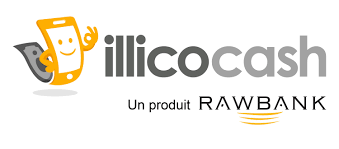

Fête de la Musique 2026
Venez chanter avec
 à la Fête de la Musique !
à la Fête de la Musique !
KIN MIZIKI ELONGO
Le 21 juin 2026 — gagnez jusqu'à 3.000.000 FC
Un programme initié par le Ministère Provincial de la Jeunesse, Sports et Loisirs, Culture et Arts — Ville de Kinshasa.
Rayonnement culturel
Promouvoir la culture congolaise
Festivals
Festival Que Viva Papa Wemba, Fête de la Musique et Événements populaires.
Artistes
Soutien, promotion et accompagnement des talents de Kinshasa.
Patrimoine culturel
Valorisation de l'histoire, des mémoires et des expressions culturelles.
Projets artistiques
Appui aux initiatives créatives, audiovisuelles et scéniques.
Projet phare
Festival Que Viva Papa Wemba
Une grande célébration culturelle organisée au Pullman, à l'Académie des Beaux-Arts et à Molokai pour honorer l'héritage de Papa Wemba et soutenir les artistes congolais.

Héritage Culturel
Valorisation du Patrimoine Kinois
Un engagement profond pour la préservation de notre histoire et la promotion de nos richesses culturelles à travers le monde.
Centenaire de Kinshasa
Célébrer les 100 ans de notre capitale (Juillet 2026) avec une série d'événements culturels qui rappellent les racines profondes de notre belle ville.
Prix Littéraire & Médiathèque
Mise en place d'une grande bibliothèque publique et d'un prix littéraire en Août 2026 pour encourager la lecture, l'écriture et la diffusion des savoirs locaux.
Expositions & Arts Contemporains
Organisation de la biennale des arts avec l'Académie des Beaux-Arts, offrant une plateforme internationale aux plasticiens congolais.

Talents Locaux
Soutien aux Créateurs & Musiciens
Fête de la Musique
Un moment de célébration populaire réunissant les grands noms et les étoiles montantes de la rumba et de la musique urbaine.
Fans Zones Fally Ipupa
Soutien aux animations et concerts populaires (Lemba, Barumbu, Bandalungwa) pour rapprocher les stars de leur public local.
Marathon Culturel
Échanges artistiques transfrontaliers (Kin-Brazza) via le COSPECO pour faire rayonner notre créativité sur les deux rives du fleuve.
Identité Kinois
La Rumba Congolaise : Notre Âme
Inscrite au patrimoine culturel immatériel de l'humanité, la Rumba n'est pas qu'une musique. C'est le rythme qui dicte le pas de chaque Kinois, l'art de vivre, de s'habiller (la SAPE) et de partager.
Soutien aux Studios Locaux
Subventions pour la création d'espaces de répétition professionnels.
Mémoire & Archives
Projet de digitalisation des œuvres des précurseurs (Franco, Tabu Ley, Papa Wemba).


Découverte
Tourisme Culturel & Arts Plastiques
Kinshasa est un musée à ciel ouvert. De l'Académie des Beaux-Arts aux marchés d'artisans, le Ministère œuvre pour faire de la capitale une destination de choix pour les amateurs d'art contemporain africain.
Académie des Beaux-Arts
Un partenariat renforcé pour la biennale des arts et l'embellissement des espaces publics de la ville.
Street Art & Fresques
Soutien aux collectifs urbains pour redonner des couleurs aux murs de nos communes (Lingwala, Bandal).
Arts Numériques
Accompagnement des jeunes talents dans la photographie, la vidéo, et les nouvelles créations audiovisuelles.
Galerie
Photos / Vidéos
Revivez nos événements culturels et artistiques en images et en vidéos.

Feuille de Route
Actions et Projets (2025 - 2026)
Programme d'actions prioritaires pour le rayonnement de la culture et des arts.
| Période | Programme / Projet | Actions / Réalisations | Observations |
|---|---|---|---|
| Octobre 2025 | Division Urbaine de la Culture, Arts et Patrimoine | État des lieux de la DUCAP, préparation de la feuille de route 2026-2028. | Transmission au Cabinet |
| Octobre 2025 | Festival que viva Papa Wemba | Concept, budget, plan de scène et marchandage sponsors. Lieux : Pullman, Académie des Beaux-Arts, Couloir Madiakoko. | En quête de fonds |
| Octobre 2025 | Coordination Ministérielle | Échanges avec la Ministre Nationale de la Culture. Dépôt des états des lieux. | Harmonisation "Kin Ezo Bonga" |
| Octobre 2025 | Académie des Beaux-Arts & ARGPK | Exposition biennale (Juin 2026), relance des sites touristiques, plan cadastral des panneaux. | Commission tripartite |
| Décembre 2025 | Ambassade de France | Mise en place d'un cadre de collaboration culturel. | Élaboration d'un MoU |
| Janvier 2026 | COSPECO KIN-BRAZZA | Relance de la coopération. Programmation du Marathon Culturel Kin-Brazza. | - |
| Mai 2026 | Fans Zones Fally Ipupa | Projets d'animation à Lemba, Barumbu, Bandalungwa. | - |
| Juin 2026 | Fête de la Musique | Validation du concept et festivités musicales. | - |
| Juillet 2026 | Kinshasa Centenaire | Célébration des 100 ans de la ville de Kinshasa. | - |
| Août 2026 | Prix littéraire & Médiathèque | Validation du concept, identité visuelle et développement de la lecture. | - |
Bilan & Perspectives
Points forts : Validation de la feuille de route, exécution
du projet "Que Viva Papa Wemba", MoU avec l'Ambassade de France.
Priorités : Fans Zones Fally Ipupa, Fête de la Musique, et recherche de financements
propres.